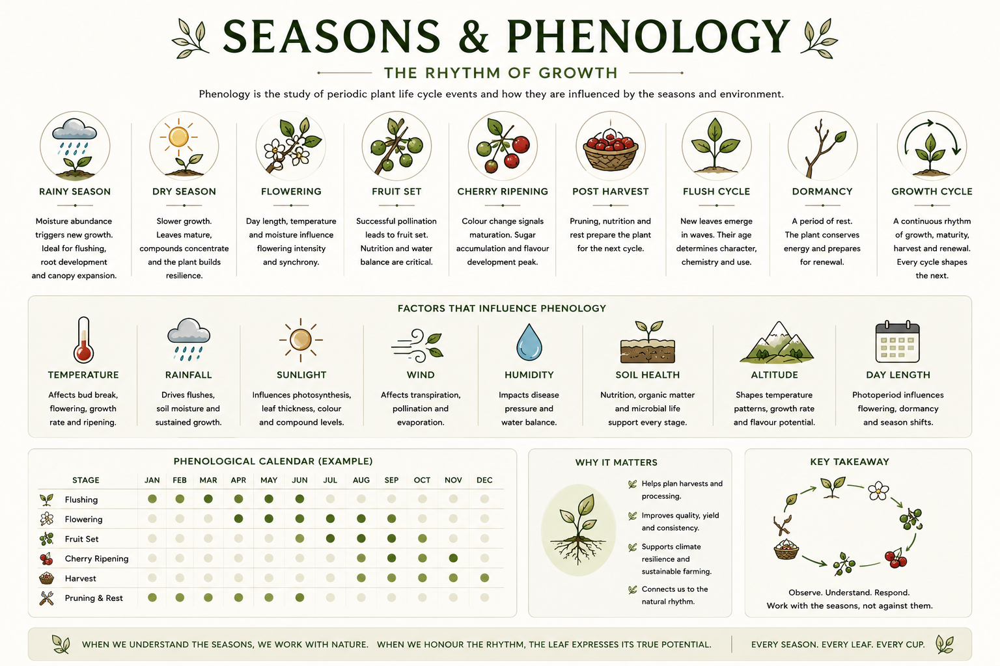

Phenology is the study of periodic plant life cycle events and how they are influenced by seasons and environment. For Buna, understanding the plant's seasonal rhythm determines when the best leaf is available, how to care for the plant at each stage, and how to read the field rather than the calendar.

Reference image — Seasons & Phenology: The Rhythm of Growth. Nine seasonal stages, eight influencing factors, and a phenological calendar.
Moisture abundance triggers new growth. The rainy season is ideal for flushing — the plant pushes new leaves, develops its canopy, and expands root structure. For Buna producers, the rainy season signals the arrival of young leaf material. Kerala's southwest monsoon (roughly June to September) is the primary rainy season.
See Leaf Origin — Rainfall →Growth slows. Leaves mature, and the plant concentrates its compounds and builds resilience. The dry season produces a different leaf character — denser, with more concentrated flavour potential. Water stress management becomes important. Mature leaves harvested in the dry season may offer a distinct cup profile.
See Plant Care — Water Management →Coffee flowers are brief, intensely fragrant, and triggered by the transition from dry to wet conditions. Flowering intensity and synchrony are influenced by day length, temperature, and moisture. Successful flowering sets the stage for fruit development. During flowering, the plant's energy is partially redirected — a factor to consider in care scheduling.
Successful pollination leads to fruit set — the development of coffee cherries from fertilised flowers. Nutrition and water balance are critical during this stage. Poor fruit set reduces the cherry crop; it also affects the plant's energy budget and can influence leaf production in the same season.
Colour change signals maturation and sugar accumulation. Cherry ripening marks the peak of flavour development in the fruit. It is also a period of high demand on plant resources — water, sunlight, and nutrition are all being directed toward the ripening cherries. Leaf quality during this period reflects that energy competition.
After cherries are picked, the plant begins to recover and prepare for the next cycle. Pruning, nutrition, and rest during the post-harvest period set the foundation for the following season. This is a critical window for care investment — neglected post-harvest management compounds across seasons.
See Plant Care — Pruning →New leaves emerge in waves from the growing tips. Their age determines character, chemistry, and appropriate use. The flush cycle is not a single event — it repeats multiple times across a season, often triggered by rain after a dry period. Each flush has a different character and harvest window.
See Flush / Young Leaf →A period of rest during which the plant conserves energy and prepares for renewal. Dormancy is not failure — it is biological necessity. Plants that are not allowed to rest tend to exhaust over time. In Kerala's climate, dormancy is partial rather than complete, but the principle of reduced demand still applies.
The complete continuous rhythm of growth, maturity, harvest, and renewal. Every cycle shapes the next. A well-managed growth cycle produces consistent leaf quality across years; a poorly managed one creates unpredictable variability. Understanding the full cycle — not just the harvest window — is the mark of an experienced producer.
Affects bud break, flowering, growth rate, and ripening. Warmer temperatures accelerate all stages; cooler temperatures slow them. Temperature variation between seasons is the primary phenological clock for coffee in most growing environments.
See Leaf Origin — Temperature →Drives flushes, sustains soil moisture, and supports growth across all stages. Rain after a dry period is one of the most reliable triggers for new leaf flush. Rainfall patterns determine when the Buna producer's harvest calendar begins.
See Leaf Origin — Rainfall →Influences photosynthesis, leaf thickness, colour, and compound levels. Day length (photoperiod) also plays a role in triggering flowering and dormancy transitions — the plant responds to changing light duration as a seasonal signal.
Affects transpiration, pollination, and evaporation. Strong wind increases water loss from leaves and can stress the plant; moderate air movement supports pollination and reduces disease pressure through improved airflow.
Impacts disease pressure and water balance within the leaf. High ambient humidity — characteristic of Kerala — reduces plant water stress but increases fungal disease risk. Managing the humidity environment through canopy and spacing decisions is an active farm practice.
Nutrition, organic matter, and microbial life support every stage of the phenological cycle. A soil that is depleted mid-season cannot support the plant's peak demand. Soil health management across the full year — not just at planting — is what sustains consistent phenological performance.
See Plant Care — Soil Health →Shapes temperature patterns, growth rate, and flavour potential across the full phenological cycle. Higher altitude means cooler temperatures and a slower, more concentrated development. Citane at 130 metres operates in a warm, fast-moving phenological rhythm.
See Leaf Origin — Altitude →Photoperiod — the number of hours of daylight — influences flowering, dormancy, and seasonal transitions. Coffee is sensitive to changes in day length as a trigger for key phenological events. In equatorial and near-equatorial environments like Kerala, day length variation is moderate but still biologically significant.
Observe. Understand. Respond. Work with the seasons, not against them. When we understand the seasons, we work with nature. When we honour the rhythm, the leaf expresses its true potential. Every season. Every leaf. Every cup.